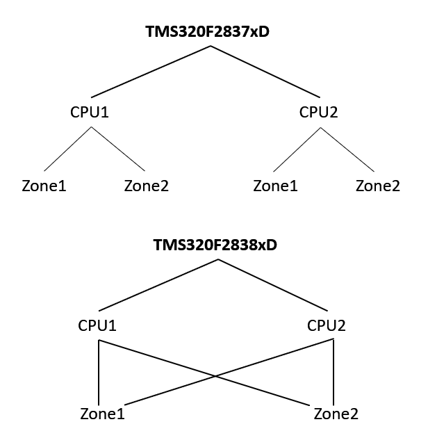
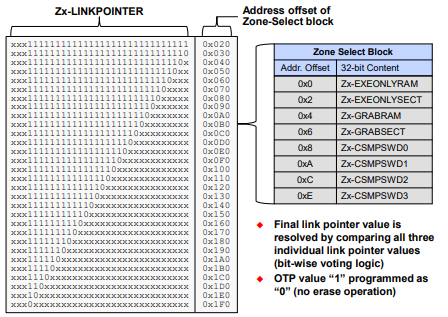
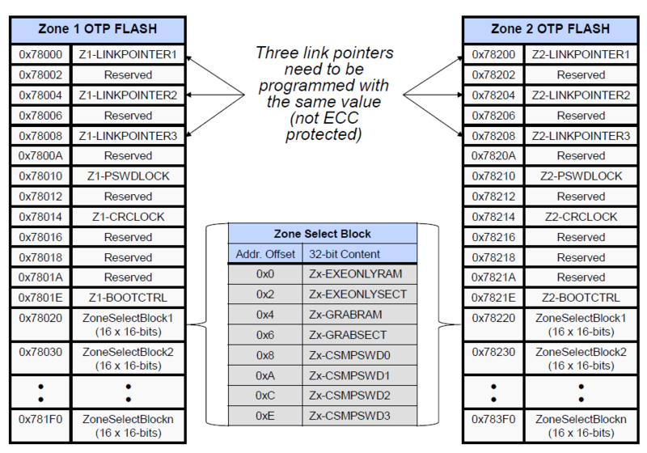
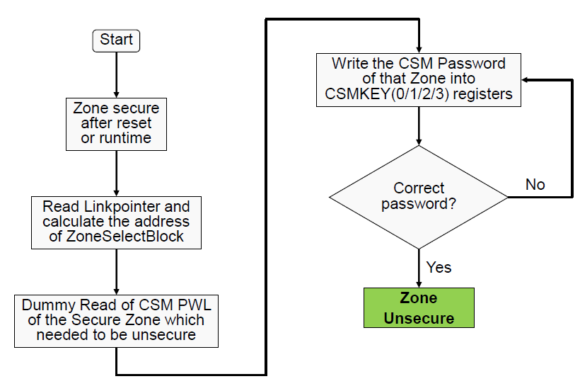

Dual Code Security Module (DCSM)#
The purpose of code security is to prevent unauthorized access to on-chip secure memories such as Flash, RAM, OTP and ROM.
Earlier generation C2000 MCUs feature the “Code Security Module (CSM)”. In CSM, there is no configurability. Security was either enabled or disabled for all secure resources. The passwords were stored in the main flash array itself. In DCSM, there are two independent secure zones (hence the word “dual”) to which securable resources can be assigned. The assignment is done by programming select OTP locations in the Zone Select Block (ZSB). Also, the passwords are stored in the OTP as part of the ZSB.
DCSM offers protection for two zones - Zone 1 and Zone 2 (Note: For F2837xD each CPU has a DCSM. For the F2838xD both security zones are shared by each CPU subsystem).

Security configurations for each zone is stored in its own dedicated secure OTP. These configurations are stored in “Zone Select Blocks (ZSB)”. Each block is 16 x 16-bits. There are 30 such identical blocks in the OTP. Anytime the security configuration is changed (allocation of flash sectors / RAM blocks to a zone or password change), you need to move to the next ZSB.
Following are the on-chip resources that can be secured using the DCSM:
Flash memory (Individual sectors can be assigned either zone. It is possible to not assign a sector to either zone. i.e. a sector can remain unsecure).
RAM (Not every RAM block is securable. Refer to memory map in the data sheet for details. It is possible to not assign a securable RAM block to either zone. i.e. a securable RAM block can remain unsecure).
One-time Programmable Memory (OTP). The OTP contains the security configuration for the individual zone.
Secure ROM.
Data reads from (and writes to) secured memory are only allowed for code which itself is running from secured memory.
All other data reads and writes are blocked. For example: CCS reads through the JTAG debug probe, ROM bootloader, code running in external memory or unsecured internal memory.
Zone Selection#
Each securable on-chip memory resource can be allocated to either Zone 1 (Z1), Zone 2 (Z2), or allowed to remain as unsecure.
DCSM Register |
Zone Allocation |
|---|---|
DcsmZ1Regs.Z1_GRABSECTRX register |
Allocates individual Flash sectors to Zone 1 or left unsecured |
DcsmZ2Regs.Z2_GRABSECTRX register |
Allocates individual Flash sectors to zone 2 or left unsecured |
DcsmZ1Regs.Z1_GRABRAMRX register |
Allocates RAM blocks to Zone 1 or left unsecured |
DcsmZ2Regs.Z2_GRABRAMRX register |
Allocates RAM blocks to Zone 2 or left unsecured |
CSM Passwords#
Devices featuring the Code Security Module (CSM) store the password in fixed locations in flash. Devices featuring the Dual Code Security Module (DCSM) store the password in OTP. Since OTP locations can only be programmed once, the password locations need to be changed every time the password needs to be changed. The current password location is tracked by a zone-specific link pointer.
Each zone is secured by its own 128-bit (four 32-bit words) user defined password. The four passwords are referred to by Zx_CSMPSWD0, Zx_CSMPSWD1, Zx_CSMPSWD2, and Zx_CSMPSWD3.
Passwords for each zone are stored in their dedicated OTP location. The current location is pointed to by the zone-specific link pointer.
128-bit CSMKEY registers are used to unsecure and secure device.
Password locations for each zone can be locked and secured by programming PSWDLOCK fields in the OTP with any value other than “1111b (0xF)”.
Zone Select#


Note:
The images above are specific to the F2837xD device. Refer to your device’s Technical Reference Manual (TRM) for other devices.
Procedure to unsecure and secure the device#
The device is always secure after reset. In order to unsecure the device:
Perform a dummy read of each password in the OTP. This would be CSMPSWD(0,1,2,3).
Write the correct password to each CSMKEY(0,1,2,3) register.
The Boot-ROM code will automatically unlock the device as part of the initialization sequence if passwords have not been programmed. Refer to the device-specific Technical Reference Manual (TRM) for more information on this topic.

Note that there are many registers that are read-only and reflect the value of the corresponding OTP locations. These registers get updated automatically when the boot-ROM (or the user) performs a dummy read.
Resources#
Feedback
Please provide any feedback you may have about the content within C2000 Academy to: c2000_academy_feedback@list.ti.com